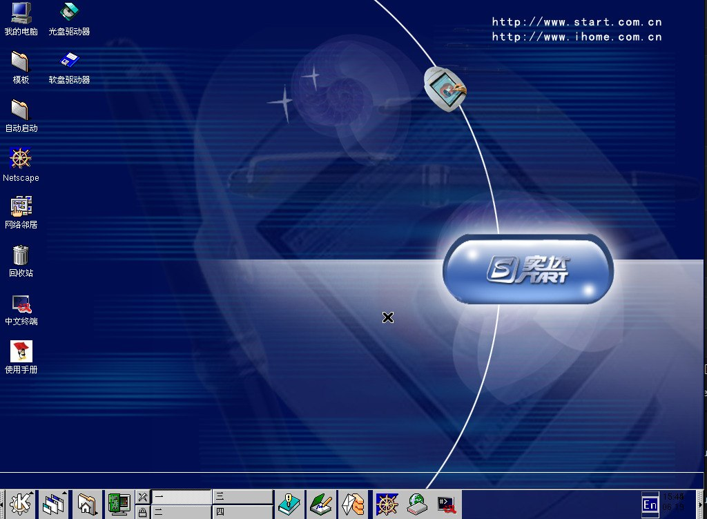
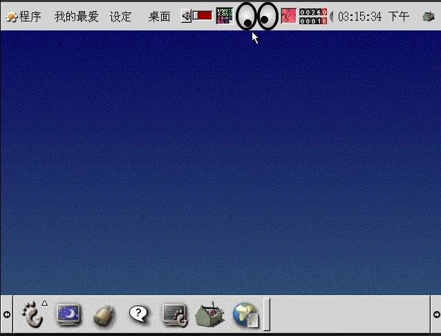
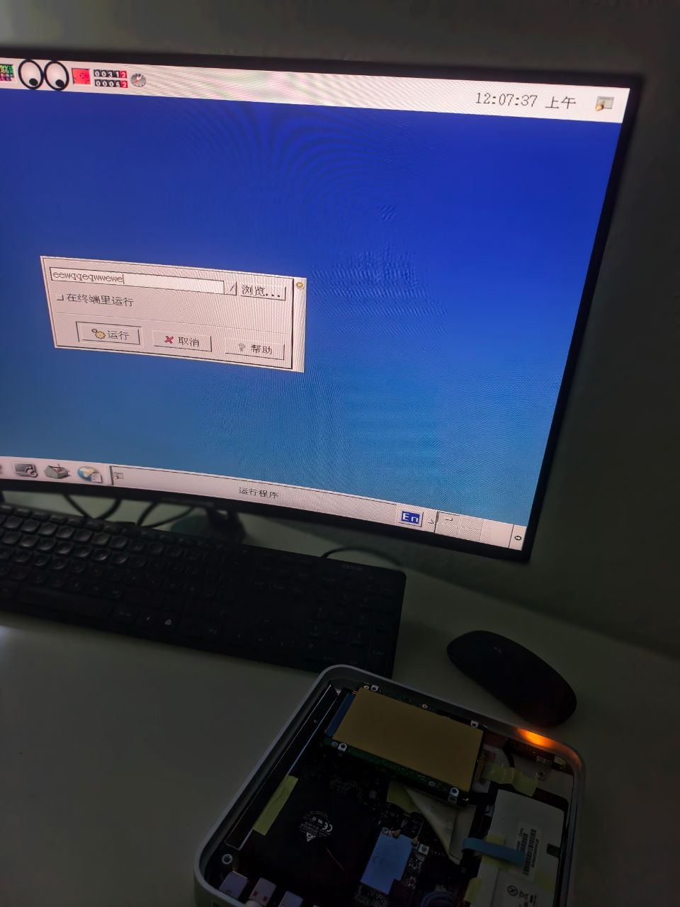

Overview
Обзор
概述
Red Flag Linux is a Linux distribution developed by Red Flag Software. It was heavily promoted by the Chinese government as a replacement for foreign operating systems to ensure national information security.
This documentation portal serves as an archival tutorial hub for installing early, historically significant versions of the OS, specifically the rare 2.0 and 3.0 releases from the early 2000s, as well as experimental ports to non-standard hardware like the Apple TV.
Use the navigation tabs above to read specific installation instructions and technical details for each release.
Video Showcase
Видеообзор
视频展示
The author of this portal ('errordan') does not own the rights to Red Flag OS, associated software, or distribution materials. This project is created strictly for historical archival and educational purposes. The author bears no responsibility for any potential damage, data loss, or issues arising from the use of these materials.
Note: Due to the extreme age of these systems, the provided tutorials may not work perfectly in all cases. If you encounter issues, you can contact errordan for help or search for solutions independently.
About the development of this project...
Version 2.0 (2000) Installation
Установка версии 2.0 (2000)
版本 2.0 (2000年) 安装
Red Flag OS 2.0 is a very old (2001) Chinese Linux distribution based on kernel 2.2. It cannot be run "out of the box" on modern emulators due to incompatibilities between the old kernel and modern virtual devices.

This guide is verified and works ONLY under Linux (tested on Ubuntu). Using QEMU on Windows for old OSes often leads to critical errors.
1. Preparation and Installation
1. Подготовка и Установка
1. 准备和安装
First, create a 6GB virtual hard drive:
qemu-img create -f qcow2 redflag2_hdd.qcow2 6GStart the installation from the CD-ROM. You must use the Cirrus video card
(-vga cirrus), as the standard QEMU video adapter will cause the XFree86 installer
to crash:
qemu-system-x86_64 -m 256 -cdrom redflag2.0.iso -hda redflag2_hdd.qcow2 -boot d -vga cirrusProceed with the standard installation process.
2. Fixing Fatal Post-Installation Errors
2. Фикс фатальных ошибок после установки
2. 修复安装后的致命错误
If you simply try to boot the installed system, you will encounter multiple issues:
- Freezing at
Partition check: hda: lost interrupt(kernel loses interrupts because DMA is too fast). Kernel panic: requires TSC(the old kernel does not understand QEMU default CPU).- The GUI will "spin" and crash due to a conflict between old acceleration and QEMU.
To fix this, you need to mount the virtual disk to your host system (Linux) and make edits:
# 1. Mount the disk
sudo modprobe nbd max_part=8
sudo qemu-nbd -c /dev/nbd0 redflag2_hdd.qcow2
sudo mkdir -p /mnt/redflag2
sudo mount /dev/nbd0p1 /mnt/redflag2
# 2. Install extlinux bootloader (replaces broken LILO)
sudo apt-get install -y extlinux syslinux-common
sudo extlinux --install /mnt/redflag2/boot
sudo bash -c 'dd if=/usr/lib/syslinux/mbr/mbr.bin of=/dev/nbd0 bs=440 count=1 conv=notrunc'
# 3. Create a proper bootloader config with DMA disabled (ide=nodma)
sudo bash -c 'cat > /mnt/redflag2/boot/extlinux.conf << EOF
DEFAULT linuxup
TIMEOUT 30
PROMPT 1
LABEL linuxup
KERNEL /boot/vmlinuz-2.2.16-22
INITRD /boot/initrd-2.2.16-22.img
APPEND root=/dev/hda1 ro ide=nodma
EOF'
# 4. Disable hardware acceleration in XFree86 so graphics do not break
sudo sed -i 's| Driver\t\t"cirrus"| Driver\t\t"cirrus"\n Option "noaccel"\n Option "no_bitblt"|' /mnt/redflag2/etc/X11/XF86Config
# 5. Unmount the disk
sudo umount /mnt/redflag2
sudo qemu-nbd -d /dev/nbd03. Correct System Startup
3. Правильный запуск системы
3. 正确的系统启动
Now that the system is patched, you can boot it using this command:
qemu-system-x86_64 -m 256 -cpu pentium3 -hda redflag2_hdd.qcow2 -boot c -vga cirrusHere we limit memory to 256 MB (1 GB makes the 2.2 kernel go crazy) and emulate a
pentium3 to bypass the TSC error.
How to log in:
Как войти в систему:
如何登录：
- At startup, the bootloader will automatically select
linuxup(uniprocessor kernel). Be sure to use this, as the multiprocessor kernel (linux) will freeze in QEMU. - During system boot, wait for the graphical boot window to appear and press
Ctrl + Cto skip it (or skip a hung step). - Wait for the text login prompt to appear (
localhost login). Enter the loginrootand the password you set during installation. - Start the graphical shell with the command:
startx
Done! You will land on the desktop of a stable running Red Flag OS 2.0.
Version 3.0 Installation
Установка версии 3.0
版本 3.0 安装
Red Flag OS 3.0 is a rare Chinese Linux distribution from the early 2000s. When installing and running this system, enthusiasts often encounter built-in protection: a requirement to enter a "License Code" of a specific format. This guide shows how to run the system in QEMU and permanently disable the license check.

It is highly recommended to perform the installation on Linux. Attempting to install in QEMU under Windows often leads to specific bugs (e.g., fatal errors during package unpacking). Installation runs stably on Linux.
Step 1. System Installation
Шаг 1. Установка системы
步骤 1. 系统安装
Create a hard drive (e.g., 6 GB):
qemu-img create -f qcow2 redflag_hdd.qcow2 6GStart the virtual machine booting from CD-ROM (-boot d):
qemu-system-x86_64 -m 1024 -cdrom redflag3.0.iso -hda redflag_hdd.qcow2 -boot d -vga stdProceed with the standard installation process (disk selection, package installation).
Step 2. The License Window Problem
Шаг 2. Проблема окна лицензии
步骤 2. 许可窗口问题
After installation is complete and the system reboots, you will be greeted by a graphical window asking for a "License Code".
Why does this happen? The Red Flag developers cleverly embedded
the key check directly into the KDE welcome screen (KDM) specifically in the
/usr/lib/libKdmGreet.so library. Guessing the key or finding a working one online
is practically impossible today.
Solution: Since the check is only hardcoded into KDM, we can simply switch the system to use the alternative display manager GDM (GNOME), which is already installed by default!
Step 3. Bypassing the Check (HDD Patch)
Шаг 3. Обход проверки (Патч HDD)
步骤 3. 绕过检查（HDD 补丁）
Close QEMU. Mount your virtual hard drive on a Linux system:
# Load Network Block Device module
sudo modprobe nbd max_part=8
# Connect disk image as block device
sudo qemu-nbd -c /dev/nbd0 redflag_hdd.qcow2
# Mount the first partition
sudo mkdir -p /mnt/redflag
sudo mount /dev/nbd0p1 /mnt/redflagNow change the display manager configuration to force GNOME (GDM) instead of KDE (KDM):
sudo bash -c 'echo "DESKTOP=GNOME" > /mnt/redflag/etc/sysconfig/desktop'Unmount the disk and disconnect the device:
sudo umount /mnt/redflag
sudo qemu-nbd -d /dev/nbd0Step 4. Boot and Login
Шаг 4. Запуск и вход в систему
步骤 4. 引导并登录
Now run QEMU booting from the hard drive (-boot c):
qemu-system-x86_64 -m 1024 -hda redflag_hdd.qcow2 -cdrom redflag3.0.iso -boot c -vga stdInstead of the license window, the standard GDM (GNOME) login screen will load.
Enter the login root and your installation password to access the desktop with full
administrator rights.
Alternatively: You can simply download a pre-patched disk image with Red Flag OS 3.0 already installed and the license bypassed!
Apple TV Port
Порт Apple TV
Apple TV 移植版
The Apple TV 1G features an Intel Pentium M and an ICH7M chipset but lacks a standard BIOS, relying on a 32-bit Apple EFI implementation. Running a 2001 Linux distribution (kernel 2.4.7) on this hardware required overcoming specific boot and hardware initialization issues.

View Technical Porting Phases (Phases 1-5)
Phase 1: EFI Boot Process
Фаза 1: Процесс загрузки EFI
阶段 1: EFI 引导过程
The Apple TV bootloader requires a macOS style boot.efi and
mach_kernel. We used an atv-bootloader to wrap the Linux
kernel. A Mach-O header patch was applied because the EFI expected a specific page size:
xxd mach_kernel | sed -e "s/ffff ffff 1000/0100 0000 1000/" | xxd -r - mach_kernel_patchedPhase 2: Hybrid MBR and File System
Фаза 2: Hybrid MBR и Файловая система
阶段 2: Hybrid MBR 和文件系统
The Linux 2.4.7 kernel does not natively support GPT partitions. Using
gdisk, we created a Hybrid MBR to expose the Linux partition to the legacy
kernel while preserving the GPT structure for EFI.
Additionally, formatting the ext3 partition required using a
128 byte inode size (rather than the modern 256 byte default) for kernel compatibility.
Phase 3: IDE Controller and Root Device
Фаза 3: Контроллер IDE и корневое устройство
阶段 3: IDE 控制器和根设备
Early boot resulted in a Kernel Panic due to failing to probe the IDE IRQ
and attempting to mount the wrong root device (error 19 mounting ext3).
We used a Python script to hex patch the bzImage header at
offset 0x1FC, changing the default root device from 0x0305
(hda5) to 0x0302 (hda2). The IDE interrupt issue was resolved by passing
kernel parameters ide0=0x1f0,0x3f6,14 combined with
acpi=off noapic pci=biosirq idle=poll via
com.apple.Boot.plist.
Phase 4: USB controller and Interrupt Routing
Фаза 4: USB-контроллер и маршрутизация прерываний
阶段 4: USB 控制器和中断路由
Initializing USB involved handling the ICH7M LEGSUP registers. The
usb-uhci.o driver initially failed with a NULL pointer dereference because
it could not recognize the ICH7M PCI Device ID.
The solution was achieved by combining the kernel boot parameters
(acpi=off noapic pci=biosirq idle=poll) with a startup script
(rc.local). The script used setpci (e.g.,
setpci -d 8086:27c8 C0.w=8f00) to clear the legacy support registers before
loading the USB modules.
Phase 5: Finalizing Device Support
Фаза 5: Завершение поддержки устройств
阶段 5: 最终确定设备支持
While modifying the uhci.o driver binary directly was
explored, the final configuration successfully loaded the USB drivers through proper
setpci register initialization and ensuring that IRQ 10 was correctly
assigned for the controller to function. With these adjustments, Red Flag OS 3.0
successfully boots to the GNOME desktop with fully functioning USB inputs and hub
support.
Universal Assembly Tools
Универсальные ассемблерные утилиты
通用汇编工具
The assembly tools developed during this project (memwrite,
disable_ioapic, elcr) are 100 percent universal for any 32-bit
Linux distribution. They will reliably configure the ICH7M chipset on the Apple TV
regardless of the operating system. You can use these tools to boot other legacy
distributions such as Slackware, Mandrake, or Debian.
Why are they universal? These utilities were written in pure
NASM x86 assembly without relying on the C standard library (libc) or any
modern GCC compiler optimizations (which caused Floating point exception
crashes on older CPUs due to SSE instructions). By exclusively using basic 80386
instructions and direct Linux kernel system calls (int 0x80) for raw memory and
I/O port access (inb/outb), these statically linked binaries are
completely portable across virtually all 32-bit Linux kernels from the era.
Important: When using the elcr tool for the
Apple TV USB controller, it is mandatory that the interrupt is set specifically to
IRQ 10 for the hardware to function properly.
Download and Install
Скачать и Установить
下载和安装
Download the compressed 3.9 GB .img.gz disk image. Use the provided
Linux bash script to write it to a drive for the Apple TV.
chmod +x install_redflag_appletv.sh
sudo ./install_redflag_appletv.shThe script writes the drive using oflag=direct to bypass cache and
ends by executing sgdisk -e to rebuild the GPT backup header for the new disk size.